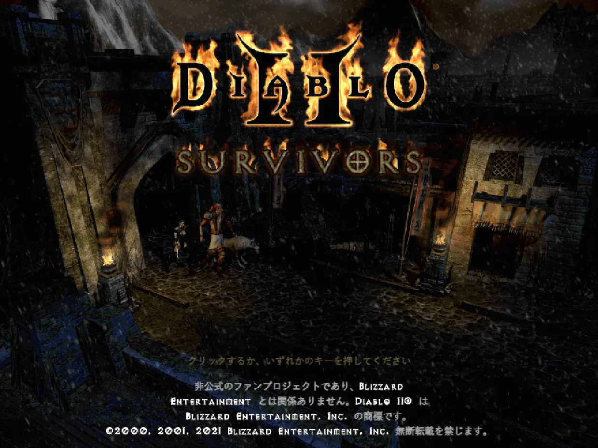
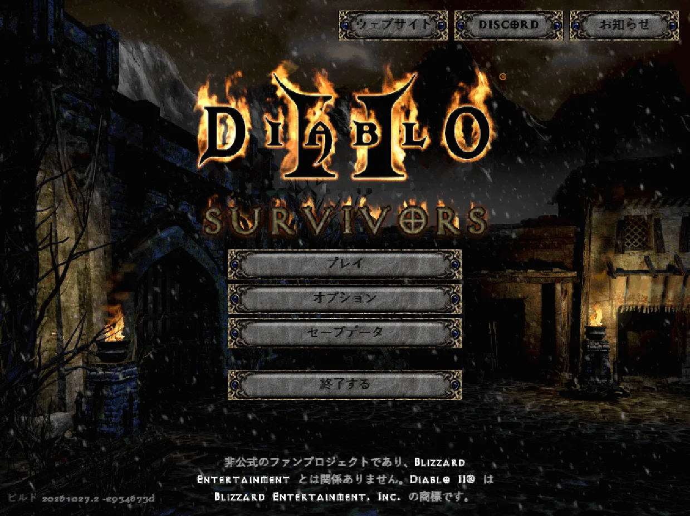
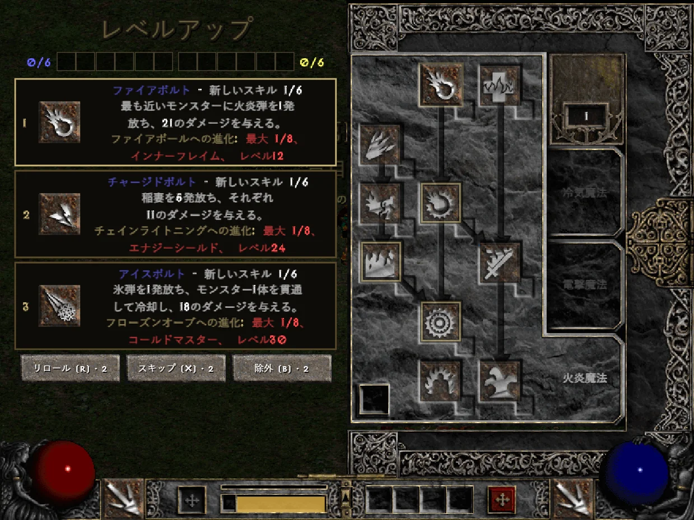
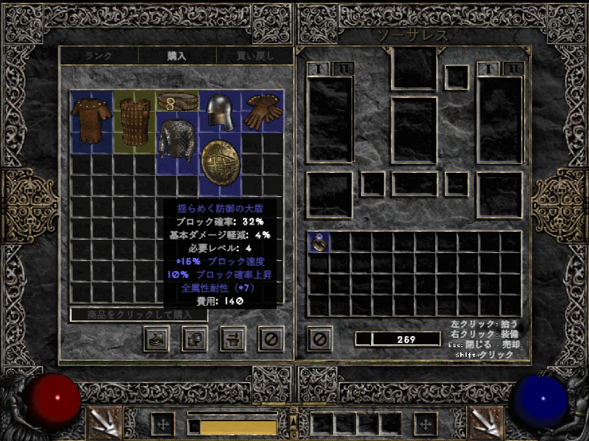
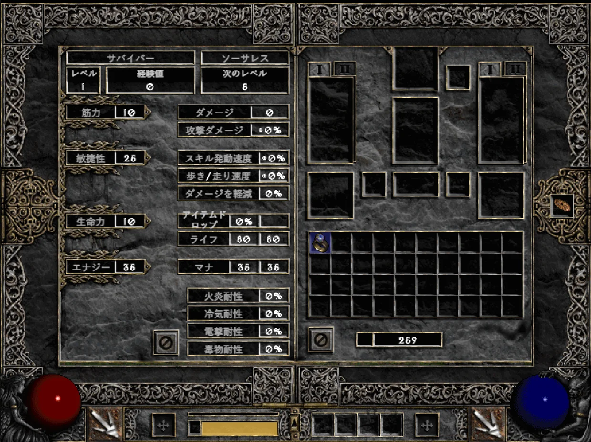
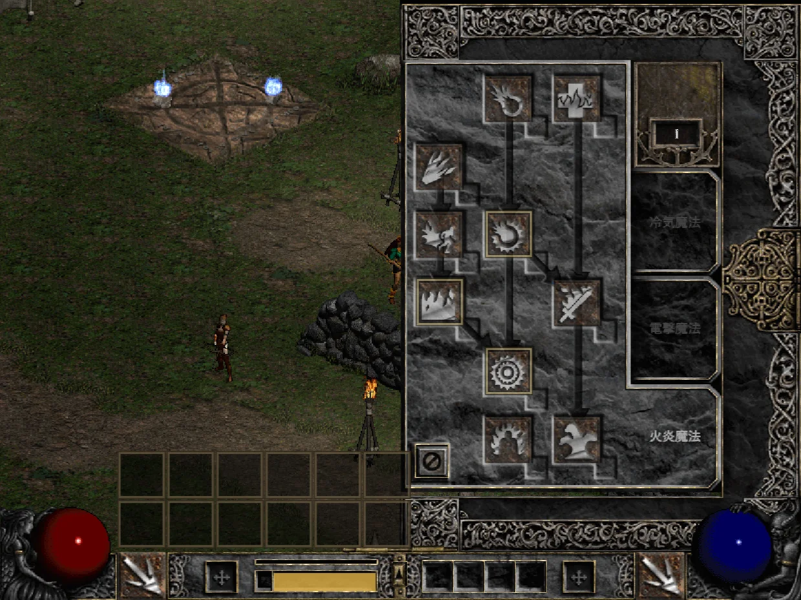
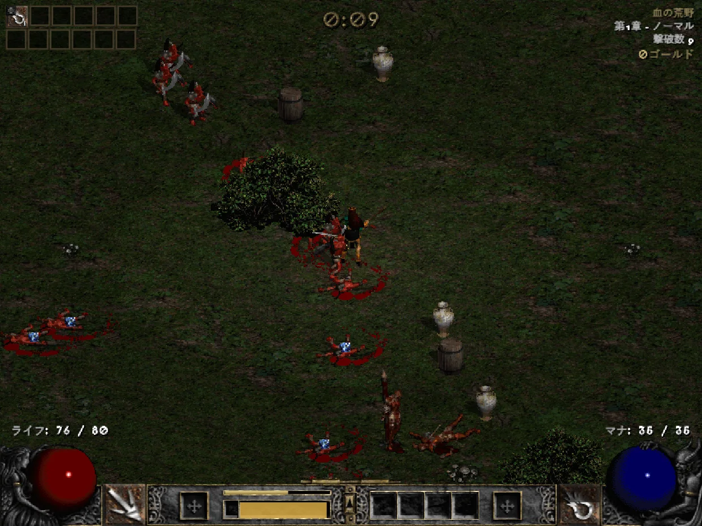
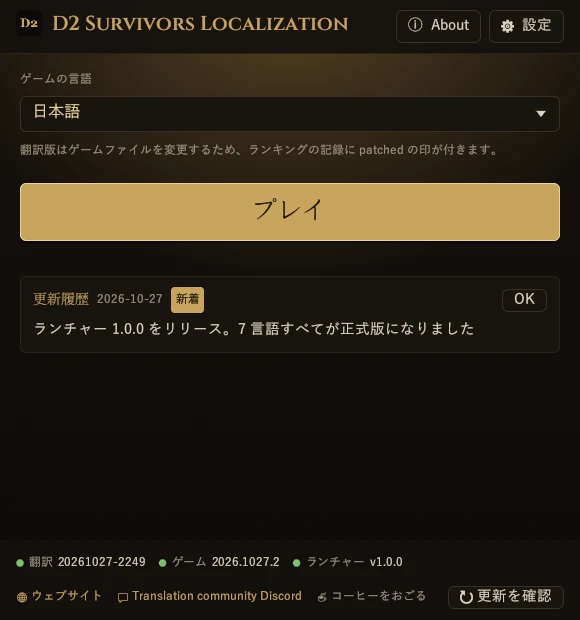
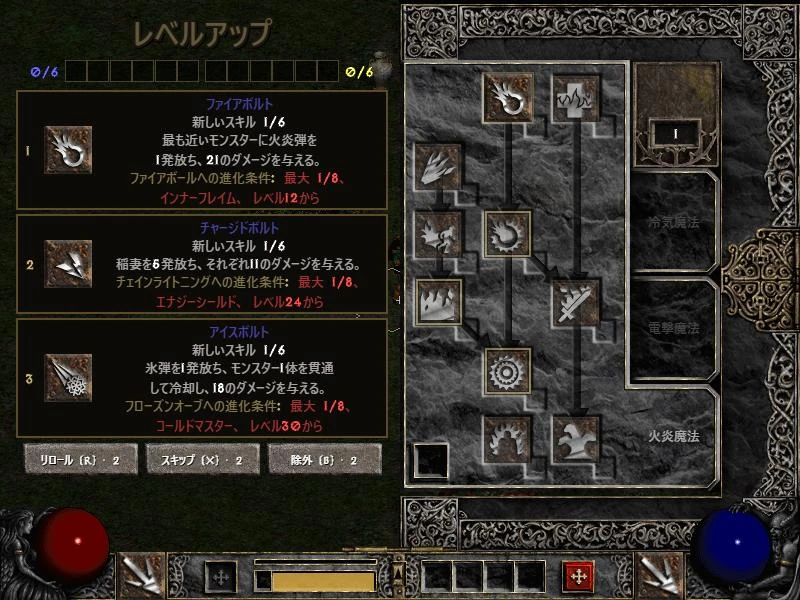
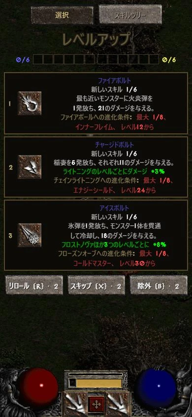

D2 Survivors
作者：framara
『ディアブロ II』の世界を舞台にした、無料の非公式ファンメイドのサバイバー系ゲームです。この翻訳プロジェクトは作者とは無関係です。ゲーム自体の不具合は公式の窓口に報告してください。
非公式ファン翻訳
バージョンを選んでください
Diablo 2 Survivors（D2 Survivors／ディアブロ2 サバイバーズ）のゲームそのものを日本語化します。攻略ページではなく、UI・スキル・アイテム・モンスター・レベルアップカードまで日本語に。用語は『ディアブロ II リザレクテッド』の公式訳に準拠しています。ランチャーでワンクリック導入・自動更新、いつでも元に戻せます。
Diablo 2 Survivors（D2 Survivors／ディアブロ2 サバイバーズ）のゲームそのものを日本語化します（攻略ページではありません）。ブラウザ版なら、ブックマークをクリックするだけで中国語（繁体字）、中国語（簡体字）、日本語、ドイツ語、フランス語、ロシア語、またはポーランド語に切り替わります。用語は『ディアブロ II リザレクテッド』の公式訳に準拠。インストール不要で、PC でもスマホでも使えます。










ゲーム画面：D2 Survivors（framara）、プレイヤー自身の Diablo II ファイルを使用
このプロジェクトが提供するのは翻訳だけで、ゲームのファイルは含まれていません。始める前に、下の公式の入手先から D2 Survivors と『ディアブロ II』を用意してください。
作者：framara
『ディアブロ II』の世界を舞台にした、無料の非公式ファンメイドのサバイバー系ゲームです。この翻訳プロジェクトは作者とは無関係です。ゲーム自体の不具合は公式の窓口に報告してください。
Blizzard Entertainment
D2 Survivors はお使いの PC にある『ディアブロ II』のグラフィックとサウンドを読み込むため、『ディアブロ II リザレクテッド』、または『ディアブロ II』＋『ロード・オブ・デストラクション』（パッチ 1.14）を各自で用意する必要があります。
用語：スキル・アイテム・モンスター・エリアなどの名前は『ディアブロ II リザレクテッド』の公式訳に準拠し、それ以外はこのプロジェクトで翻訳しています。
中国語（繁体字）、中国語（簡体字）、日本語、ドイツ語、フランス語、ロシア語、ポーランド語はすべて正式版です。
翻訳・対応言語・ランチャーの更新です。ランチャーとブックマークは毎回最新の翻訳を取得するので、ダウンロードし直す必要はありません。
ゲームのファイルを手で書き換える必要はなく、すべてランチャーが行います。先にゲームを終了してください。ランチャーの画面は選んだ言語で表示されます。
D2 Survivors 公式サイトからデスクトップ版をダウンロードし、ゲームの設定画面で『ディアブロ II』のインストール先を指定して、ゲームが起動することを確認します。
d2s-launcher.exe をダウンロードして、好きなフォルダに置きます。インストールは不要です。
初回は言語の選択画面が出ます。各言語はその言語自身の文字で書かれています。使いたい言語を選んで「→」を押すと、ランチャーの画面もゲームの翻訳もその言語になります。
①「ゲーム」：D2 Survivors を探します（標準は %LOCALAPPDATA%\Programs\D2 Survivors。別の場所なら「フォルダーを選択…」）。②「ディアブロ II」：PC にある『ディアブロ II リザレクテッド』またはクラシック版を探します。見つからなくても「スキップ」できます。③「完了」：必要なら「デスクトップにショートカットを作成」を押してから「プレイ」を押します。初回は翻訳をダウンロードし、元の app.asar を自動でバックアップします。
標準で起動のたびに最新の翻訳を取得し（「設定」の「起動時に翻訳を自動更新」）、ゲームのアップデート後も自動で適用し直します。言語を変えたいときは、メイン画面の「ゲームの言語」で切り替えます。
app.asar が元のファイルに戻ります。%LOCALAPPDATA%\D2SurvivorsLauncher フォルダーを削除します。自分でショートカットを作る場合は、リンク先を下のようにすると、ランチャーの画面を出さずに指定した言語でゲームを起動できます（「デスクトップにショートカットを作成」で作ったものは、画面を開いてすぐにゲームを起動します）。
d2s-launcher.exe --launch --lang ja--launch--play--lang <id>--no-update--update--restore--self-update--statusd2survivors.lol のブラウザ版で遊んでいますか？ ブックマークをひとつ追加するだけで中国語（繁体字）、中国語（簡体字）、日本語、ドイツ語、フランス語、ロシア語、またはポーランド語に切り替えられます。ランチャーと同じ翻訳を使い、インストールは不要、PC でもスマホでも使えます。
D2 日本語化 ← ブックマークバーへドラッグ
javascript:import('https://cycleapple.github.io/d2survivors-localization/web/d2zh.js').then(m=>m.default('ja')).catch(e=>alert('D2 Survivors Localization: '+e))上の「ブックマークのコードをコピー」を押します。
Safari でこのページを開き、共有から「ブックマークを追加」を選んで保存します。
新しい iOS では、共有ボタンは「⋯」メニューの中です。
ブックマークを開いて「編集」を押し、追加したブックマークを選びます。
新しい iOS では、ブックマークは「⋯」メニューの中です。
名前を「D2 日本語化」にし、アドレスを全部コードに置き換えて「完了」を押します。
d2survivors.lol のトップページを開き、ブックマークの「D2 日本語化」を押します。
トップページからのほうがメモリが少なく済み、読み込みも速いので、スマホでは特におすすめです。ゲームページ（/play/）で押しても動きます。
上の「ブックマークのコードをコピー」を押します。
Chrome でこのページを開き、⋮ を押して上の列の ☆ を押します。
⋮ →「ブックマーク」を開き、追加したブックマークの ⋮ →「編集」を押します。
名前を「D2 日本語化」にし、URL を全部コードに置き換えて ← で保存します。
d2survivors.lol のトップページでアドレスバーへ「D2 日本語化」と入力し、☆ の付いた候補を押します。
ブックマーク一覧から押しても動きません。トップページからのほうがメモリが少なく済み、読み込みも速くなります。ゲームページ（/play/）でも動きます。
画面はイメージです。ボタンの名前や位置は OS のバージョンによって少し違うことがあります。
いいえ。プレイヤーが作った非公式の翻訳で、D2 Survivors の開発者とも Blizzard Entertainment とも関係ありません。
プログラムの部分はそうです。ランチャー、ブックマーク、このサイト、ツールのソースコードは GitHub で MIT ライセンス のもと公開しています。ランチャーは公開しているソースコードから GitHub Actions で自動的にビルドしており（ビルド履歴）、各リリースには d2s-launcher.exe.sha256 が付いているので、自分で照合できます。
翻訳データ（辞書）はまだオープンなライセンスではなく、すべての権利を留保しています。詳しくは dict/LICENSE をご覧ください。辞書に含まれる公式訳の用語は Blizzard Entertainment に帰属します。
正式版です。すべての文字を翻訳し、ゲーム内で訳し漏れがないことを確認しました。そのうえで UI の全文と無作為に選んだ 300 件を改めて見直し、見つかった点をもとに辞書全体で約 640 か所を修正しています。用語は『ディアブロ II リザレクテッド』の公式日本語訳に準拠しています。
不自然な訳に気づいたら、ぜひ教えてください。
はい。ランチャーは今のところ Windows 版のみです。Mac・Linux・スマホではブラウザ版で遊び、「ブラウザ版」タブのブックマークで日本語に切り替えてください。
ありません。ランチャーが置き換えるのはゲームフォルダ内の resources\app.asar だけで、置き換える前に元のファイルをバックアップします。セーブデータは別の場所にあり、読み込みも変更もしません。
ありません。セーブデータはいつもどおりブラウザに保存されます。ブックマークは開いているページの中でゲームの文字を差し替えるだけで、何も残しません。再読み込みすると元に戻ります。
ゲームのアップデートで app.asar が置き換わるため、翻訳は一時的に消えます。いつもどおりランチャーかショートカットから起動すれば、また適用されます。
新しいバージョンの変更が大きく書き換えルールが合わない場合、ランチャーは無理に書き換えず、オリジナルのままゲームを起動して「翻訳を修正中」と表示します。修正が済めば次回の起動で自動的に適用されるので、何もする必要はありません。
ブックマークは毎回、書き換えルールが新しいバージョンに合うかを先に確認します。合わない場合は「更新が必要」と表示して起動せず、元のゲームにも影響しません。翻訳が更新されるまで英語版で遊んでください。
翻訳はゲームに組み込まれている韓国語の枠を借りているため、適用すると言語メニューの韓国語が選んだ言語の名前になります。韓国語で遊びたいときは、ランチャーで「한국어 (원본)」を選んで起動してください。
Android の Chrome では、ブックマーク一覧からタップしても実行されません。アドレスバーにブックマークの名前「D2 日本語化」を入力し、下に出てくるブックマークをタップしてください。iPhone は、トップページかゲームページを開いた状態で Safari のブックマーク一覧からタップします。
ブックマークの URL がコードにまるごと置き換わっていて、javascript: で始まっているかも確認してください。
たいていはスマホのメモリが足りず、ブラウザがタブを読み込み直しています。次の方法で改善できます。
再読み込みされたら、もう一度ブックマークを押せば続けられます。進行状況はゲーム自体のセーブデータのとおりです。
いいえ。ホーム画面から開くと全画面表示になり、アドレスバーもブックマークもないため押せません。翻訳も次回までは残らず、再読み込みや開き直しでオリジナルに戻ります。Safari や Chrome のタブで遊び、開くたび・再読み込みするたびにブックマークを押してください。
ゲーム内の文字はすべて翻訳済みで、訳し漏れがないことをゲーム内で確認しています。英語が表示される場合は、たいていゲームのアップデートで新しい文字が増えたためです。今後の翻訳の更新で対応し、ランチャーが自動でダウンロードします。いつまでも英語のままなら、ぜひ教えてください。
ゲーム内の文字はすべて翻訳済みで、訳し漏れがないことをゲーム内で確認しています。英語が表示される場合は、たいていゲームのアップデートで新しい文字が増えたためです。今後の翻訳の更新で対応し、ブックマークは毎回最新の翻訳を読み込みます。いつまでも英語のままなら、ぜひ教えてください。
ランチャーにはコード署名がありません（署名の証明書は毎年費用がかかります）。そのため、ダウンロードした人が十分に増えるまでは Windows SmartScreen がこの警告を出します。
署名はありませんが、ランチャーのソースコードとビルドの過程はどちらも公開しています。
「詳細情報」を押してから「実行」を押してください。次からは表示されません。ダウンロードはこのサイトか GitHub Releases からだけにしてください。各リリースには d2s-launcher.exe.sha256 が付いていて、certutil -hashfile d2s-launcher.exe SHA256 で照合できます。
ブラウザが「このファイルは一般的にダウンロードされていません」と表示した場合は、ダウンロードのメニューから「保存」を選んでください。
今のところ使えません。ゲーム自体がキャラクター名に英字と韓国語しか使えない仕様です。
誤字・訳抜け・ブックマークやランチャーの不具合は、翻訳コミュニティの Discord に報告してください。最新情報もそこでお知らせします。
翻訳の誤りやプログラムの不具合は GitHub Issues でも報告できます。
ゲーム自体の不具合（翻訳と関係ないもの）は D2 Survivors のゲーム公式 Discord（英語）に報告してください。
大歓迎です！ すべての言語が正式版になりましたが、翻訳にはまだ良くできるところがあります。不自然な訳や誤字に気づいたら、特にネイティブの方はぜひ教えてください。こちらからご連絡ください。